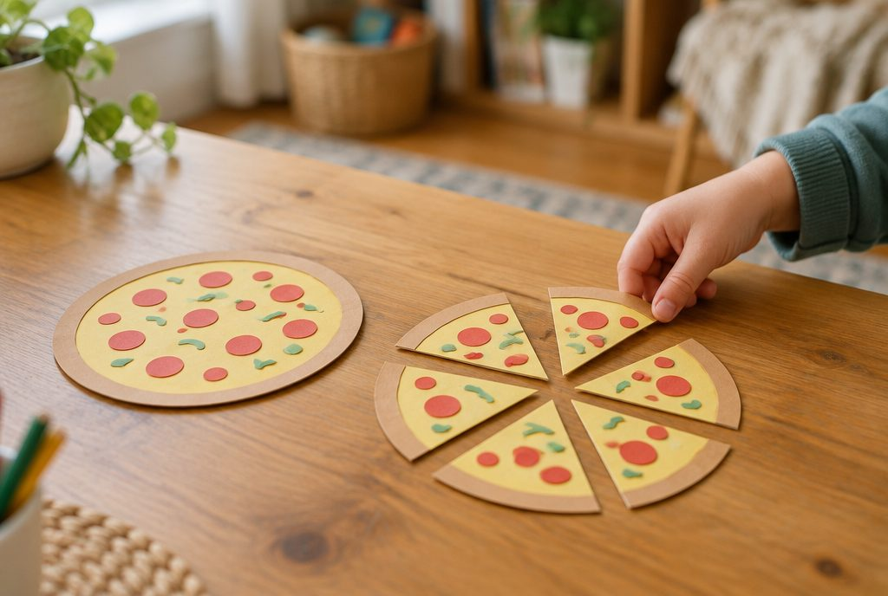

분모가 같은 분수, 어떻게 더하고 뺄까?

피자 한 판을 똑같이 8조각으로 나누어 내가 3조각, 동생이 2조각을 먹었어요. 둘이 먹은 양은 피자 한 판의 얼마일까요?
분모가 같으면 분자끼리 더해요
3/8은 1/8이 3개, 2/8는 1/8이 2개예요. 그러니까 3/8 + 2/8는 1/8이 모두 5개, 곧 5/8예요.
분모가 같은 분수의 덧셈은 분모는 그대로 두고 분자끼리 더해요. 분모까지 더하면 한 조각의 크기가 바뀌어 버리니 조심해요.
3/8 + 2/8 → 1/8이 3 + 2 = 5(개) → 5/8
합이 1보다 크면 대분수로 나타내요
진분수끼리 더했는데 분자가 분모보다 커지면 가분수가 돼요.
가분수는 대분수로 바꾸어 나타낼 수 있어요. 분모만큼 모이면 1이 되니까, 1을 자연수로 떼어 내요.
4/6 + 5/6 = 9/6 → 6/6은 1이므로 9/6 = 1과 3/6
이렇게 풀어요: 대분수의 덧셈
방법 1: 자연수는 자연수끼리, 분수는 분수끼리 더해요. 분수끼리 더한 값이 1보다 크면 1을 자연수로 올려 줘요.
방법 2: 두 대분수를 가분수로 바꾸어 분자끼리 더한 다음, 다시 대분수로 바꿔요. 두 방법의 답은 같아요.
1과 2/5 + 2와 4/5 ① 자연수끼리 1 + 2 = 3 ② 분수끼리 2/5 + 4/5 = 6/5 = 1과 1/5 ③ 3 + 1과 1/5 = 4와 1/5
분모가 같은 분수의 뺄셈
뺄셈도 분모는 그대로 두고 분자끼리 빼요. 6/7 − 2/7는 1/7이 6개에서 2개를 뺀 것이니 4/7예요.
대분수끼리 뺄 때는 자연수는 자연수끼리, 분수는 분수끼리 빼요. 가분수로 바꾸어 계산해도 돼요.
3과 5/9 − 1과 2/9 → 자연수 3 − 1 = 2, 분수 5/9 − 2/9 = 3/9 → 2와 3/9
이렇게 풀어요: (자연수) − (분수)와 받아내림
자연수에서 분수를 뺄 때는 자연수에서 1을 분모가 같은 분수로 바꿔요. 분모가 5이면 1 = 5/5예요.
대분수끼리 뺄 때 빼지는 분수가 빼는 분수보다 작으면, 자연수에서 1을 받아내려 분수에 더한 다음 계산해요.
3 − 1과 2/5 = 2와 5/5 − 1과 2/5 = 1과 3/5 / 4와 1/6 − 1과 5/6 = 3과 7/6 − 1과 5/6 = 2와 2/6
핵심 낱말
- 분모
- 분수에서 전체를 똑같이 나눈 수로, 가로선 아래에 쓰는 수
- 분자
- 분수에서 전체 중 차지하는 부분의 수로, 가로선 위에 쓰는 수
- 진분수
- 분자가 분모보다 작은 분수(예: 3/5)
- 가분수
- 분자가 분모와 같거나 분모보다 큰 분수(예: 7/5)
- 대분수
- 자연수와 진분수로 이루어진 분수(예: 1과 2/5)
한 줄 정리
- 분모가 같은 분수의 덧셈과 뺄셈은 분모는 그대로 두고 분자끼리 계산해요.
- 분수끼리 더한 값이 가분수가 되면 대분수로 바꾸어 나타내요.
- 자연수나 대분수에서 뺄 수 없으면 1을 분모가 같은 분수로 바꾸어 받아내려요.
학교 교육과정 연결
- [4수01-15] 분모가 같은 분수의 덧셈과 뺄셈의 계산 원리를 이해하고 그 계산을 할 수 있다.